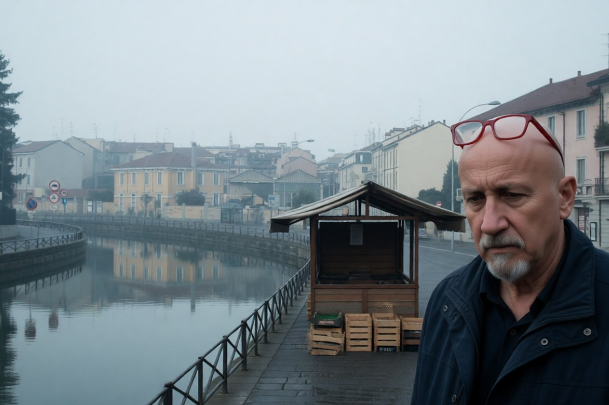

Mafia e antimafia · 13 novembre 2026
Trentun anni dopo, il delitto di Pietro Sanua non si archivia

La giudice per le indagini preliminari di Milano ha detto no alla richiesta della procura e ha disposto altri sei mesi di accertamenti. Al centro una traccia di sangue repertata nel 1995 vicino al luogo dell'omicidio.
di Franco Zanghì
Corsico è la cittadina alle porte di Milano attraversata dal Naviglio Grande. È lì che il 4 febbraio 1995 Pietro Sanua, 46 anni, commerciante di frutta e verdura e sindacalista degli ambulanti, viene ucciso a colpi di fucile.
Secondo le testate che hanno letto il provvedimento, era una figura nota nei mercati di Corsico e si batteva perché le piazzole fossero assegnate con criteri corretti. Gli avvocati della famiglia dicono che si opponeva alle prepotenze delle famiglie di 'ndrangheta della zona, fra Corsico e Buccinasco.
Il fascicolo riaperto
Per anni, su quel delitto, il silenzio. Poi la Direzione distrettuale antimafia di Milano ha riaperto il fascicolo. L'ipotesi degli inquirenti è un omicidio maturato in un contesto di 'ndrangheta, e nel fascicolo ci sono 2 indagati. Alla fine, però, la procura ha chiesto di archiviare.
La famiglia, con il figlio, si è opposta. E la giudice per le indagini preliminari Patrizia Nobile le ha dato ragione: niente archiviazione. Secondo il provvedimento, come lo riportano il Corriere della Calabria e Calabria7, le indagini vanno avanti per altri 6 mesi.
Che cosa resta da fare
Prima di tutto, quella traccia: una traccia di sangue trovata vicino al luogo del delitto e sequestrata all'epoca dal Gabinetto di polizia scientifica. Secondo la giudice la sua analisi potrebbe aiutare a individuare chi ha sparato. Poi i testimoni da ascoltare, giudicati indispensabili. E un documento che non si trova più: secondo il Fatto Quotidiano, la relazione su un'auto vista passare a forte velocità vicino al luogo dell'omicidio. Per la giudice, scrive sempre il Fatto, le indagini sono allo stato lacunose.
Gli avvocati della famiglia, Nicola Brigida e Guido Salvini, hanno detto al Fatto Quotidiano di confidare che le nuove indagini portino a individuare gli autori materiali.
Il punto
Un sindacalista degli ambulanti ucciso nel 1995. Un'inchiesta riaperta, una richiesta di archiviazione respinta, 6 mesi in più per cercare chi ha sparato. E una famiglia che, dopo 31 anni, non ha smesso di chiedere la verità.
Fonti
- Il Giorno, «Omicidio Pietro Sanua, cold case: si riapre la pista 'ndrangheta», 13 novembre 2026
- Corriere della Calabria, «Omicidio di Pietro Sanua, la gip respinge l'archiviazione», 13 novembre 2026
- Il Fatto Quotidiano, Davide Milosa, 13 novembre 2026
- LaC News24, 13 novembre 2026
- Calabria7, 13 novembre 2026
Siamo nella fase delle indagini preliminari: gli indagati, i cui nomi non vengono riportati, sono da considerarsi innocenti fino alla sentenza definitiva. Il Corriere della Calabria indica 6 mesi di nuove indagini; il Fatto Quotidiano non riporta la durata. Articolo pubblicato sul sito il 14 novembre 2026.
Questo articolo nasce dalla pagina Gli Eroi dell'Abisso, dove la stessa storia è raccontata in video.